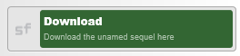
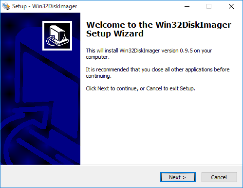
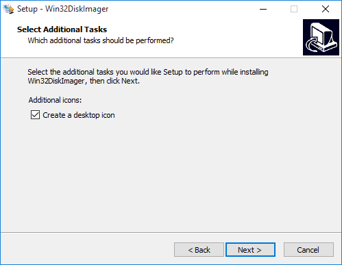
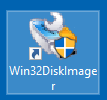
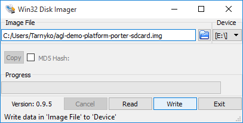

Porter image deployment on target
Once the Porter image has been built with Yocto, we can deploy it on an empty SD card to prepare its use on the target.
SD card image creation
First, we need to generate an SD card disk image file. For this purpose, a helper script is provided within the container. Here below is the way to use it.
Linux, Mac OS X ©
$ cd /xdt/build
$ mksdcard /xdt/build/tmp/deploy/images/porter/agl-demo-platform-porter-20XXYYZZxxyyzz.rootfs.tar.bz2 /home/devel/mirror
Windows ©
$ cd /xdt/build
$ sudo dd if=/dev/zero of=/sprs.img bs=1 count=1 seek=4G
$ sudo mkfs.ext4 /sprs.img
$ sudo mkdir /tmp/sprs
$ sudo mount /sprs.img /tmp/sprs
$ sudo mksdcard /xdt/build/tmp/deploy/images/porter/agl-demo-platform-porter-20XXYYZZxxyyzz.rootfs.tar.bz2
/tmp/sprs/sdcard.img
$ xz -dc /tmp/sprs/sdcard.img.xz > $XDT_WORKSPACE/agl-demo-platform-porter-sdcard.img
You should get the following prompt during the mksdcard step:
```
Creating the image agl-demo-platform-porter-sdcard.img …
0+0 records in
0+0 records out
0 bytes (0 B) copied, 6.9187e-05 s, 0.0 kB/s
mke2fs 1.42.12 (29-Aug-2014)
Discarding device blocks: done
Creating filesystem with 524287 4k blocks and 131072 inodes
Filesystem UUID: 5307e815-9acd-480b-90fb-b246dcfb28d8
Superblock backups stored on blocks:
32768, 98304, 163840, 229376, 294912
Allocating group tables: done Writing inode tables: done Creating journal (8192 blocks): done Writing superblocks and filesystem accounting information: done
Extracting image tarball… done
Image agl-demo-platform-porter-sdcard.img created!
Set the following uboot environment setenv bootargs_console ‘console=ttySC6,38400 ignore_loglevel’ setenv bootargs_video ‘vmalloc=384M video=HDMI-A-1:1920x1080-32@60’ setenv bootargs_root ‘root=/dev/mmcblk0p1 rootdelay=3 rw rootfstype=ext3 rootwait’ setenv bootmmc ‘1:1’ setenv bootcmd_sd ‘ext4load mmc ${bootmmc} 0x40007fc0 boot/uImage+dtb’ setenv bootcmd ‘setenv bootargs ${bootargs_console} ${bootargs_video} ${bootargs_root}; run bootcmd_sd; bootm 0x40007fc0’ saveenv
NB: replace bootmmc value ‘1:1’ with ‘0:1’ or ‘2:1’ to access the good slot use ‘ext4ls mmc XXX:1’ to test access
$ ls -lh $XDT_WORKSPACE -rw-r–r– 1 devel devel 2.0G Feb 15 14:13 agl-demo-platform-porter-sdcard.img
After the disk image is created, we can copy it on the SD card itself
using an SD card adapter. To do so, we need to gain access to the SD
card image file from our host machine.
If you already share a directory between your host machine and the
container (as described in section [Set up a persistent workspace](#anchor-setup-persist-wks)),
this state is already reached and you go directly on sections relating the SD
card image installation.
Otherwise, you need to copy the SD card image file out of the container
and into your host machine using SSH protocol:
- On Linux and Mac OS X hosts, you can use the `scp` command, which is part of
the OpenSSH project,
- On Windows hosts, you can use the
[`pscp.exe`](http://the.earth.li/~sgtatham/putty/latest/x86/pscp.exe)
binary, which is part of the [PuTTY project](http://www.putty.org/).
### Deployment from a Linux or Mac OS X host
Now that the SD card image is ready, the last step required is to
"flash" it onto the SD card itself.
First, you need an SD card adapter connected to your host machine.
Depending on your adapter type and OS, the relevant block device can
change. Mostly, you can expect:
- `/dev/sdX` block device; usually for external USB adapters on
Linux hosts,
- `/dev/mmcblkN`: when using a laptop internal adapter on Linux
hosts,
- `/dev/diskN`: on Mac OS X hosts,
#### Linux
If you do not know which block device you should use, you can check the
kernel logs using the following command to figure out what is the
associated block devices:
$ dmesg | grep mmcblk $ dmesg | grep sd […snip…] [1131831.853434] sd 6:0:0:0: [sdb] 31268864 512-byte logical blocks: (16.0 GB/14.9 GiB) [1131831.853758] sd 6:0:0:0: [sdb] Write Protect is on [1131831.853763] sd 6:0:0:0: [sdb] Mode Sense: 4b 00 80 08 [1131831.854152] sd 6:0:0:0: [sdb] No Caching mode page found [1131831.854157] sd 6:0:0:0: [sdb] Assuming drive cache: write through [1131831.855174] sd 6:0:0:0: [sdb] No Caching mode page found [1131831.855179] sd 6:0:0:0: [sdb] Assuming drive cache: write through […snip…] $ ```
In this example, no mmcblk device where found, but a 16.0GB disk was
listed and can be accessed on /dev/sdb which in our case is the
physical SD card capacity.
The command lsblk is also a good solution to explore block devices:
$ lsblk
NAME MAJ:MIN RM SIZE RO TYPE MOUNTPOINT
sda 8:0 0 931.5G 0 disk
|--sda1 8:1 0 8G 0 part /
|--sda2 8:2 0 16G 0 part [SWAP]
|--sda3 8:3 0 907.5G 0 part
|--vg0-usr 254:0 0 32G 0 lvm /usr
|--vg0-data 254:1 0 200G 0 lvm /data
|--vg0-home 254:2 0 100G 0 lvm /home
|--vg0-var 254:3 0 8G 0 lvm /var
|--vg0-docker 254:4 0 100G 0 lvm /docker
sdb 8:16 0 223.6G 0 disk
|--sdb1 8:17 0 223.6G 0 part /ssd
sdc 8:32 1 3.7G 0 disk <-- SD card plugged into USB card reader
|--sdc1 8:33 1 2G 0 part <--
sr0 11:0 1 1024M 0 rom
In this example, the 4GB device /dev/sdc is listed as removable
(column RM) and corresponds to a SD Card plugged into an USB card
reader.
Finally, as we know the block device which corresponds to our SD card,
we can raw-copy the image on it using the following command **from your
host terminal** : (replace /dev/sdZ by the appropriate device)
$ xzcat ~/mirror/agl-demo-platform-porter-20XXYYZZxxyyzz.raw.xz | sudo dd of=/dev/sdZ bs=1M
2048+0 records in
2048+0 records out
2147483648 bytes (2.0 GB) copied, 69 s, 39.2 MB/s
$ sync
This will take few minutes to copy and sync. You should not remove the card from its slot until both commands succeed.
Once it is finished, you can unplug the card and insert it in the micro-SD card slot on the Porter board, and perform a power cycle to start your new image on the target.
**NB:** The output format is also suitable to bmaptool utility (source
code available here: https://github.com/01org/bmap-tools:
this significantly speeds up the copy as only relevant data are written on
the Sdcard (filesystem “holes” are not written). It’s also supporting
direct access to URLs pointing to compressed images.
Mac OS X ©
If you do not know which block device you should use, you can use the
diskutil tool to list them:
```
$ diskutil list
[…snip…]
/dev/disk2 #: TYPE NAME SIZE IDENTIFIER 0: Fdisk_partition_scheme 7.9 GB disk2 1: Linux 7.9 GB disk2s1 […snip…] $ ```
In this example, we have a 8.0GB disk which can be accessed on
/dev/disk2 which in our case is the physical SD card capacity.
Finally, as we know the block device which accesses our SD card, we can
raw-copy the image on it using the following command from your host
terminal:
$ xzcat ~/mirror/agl-demo-platform-porter-20XXYYZZxxyyzz.raw.xz | sudo dd of=/dev/disk2 bs=1M
2048+0 records in
2048+0 records out
2147483648 bytes (2.0 GB) copied, 69 s, 39.2 MB/s
$ sync
This will take few minutes to copy and sync. You should not remove the card from its slot until both commands succeed.
Once it is finished, you can unplug the card and insert it in the micro-SD card slot on the Porter board, and perform a power cycle to start your new image on the target.
Deployment from a Windows host
Now that the SD card image is ready, the last step required is to “flash” it onto the SD card itself.
First, you need an SD card adapter connected to your host machine.
We will then use the Win32DiskImager program which we will download at
this URL:
http://sourceforge.net/projects/win32diskimager/
and by clicking on this button: 
We will then install it:
{style width:48%; float:left; margin-right:0.3em} {style width:48%; float:right}
And then start it with its icon: 
We can then click on the “blue folder” button to select our .img file (uncompress the XZ image first using utilities like 7zip for example).
After having verified that the drive letter on the right matches our SD card reader, we click on the “Write” button to start the flashing process.

This will take few minutes to copy and sync. You should not remove the card from its slot until both commands succeed.
Once it is finished, you can unplug the card and insert it in the micro-SD card slot on the Porter board, and perform a power cycle to start your new image on the target.